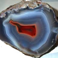
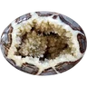
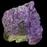
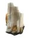

Correspondence Grimoire
Skin

Agate
SeptarianSnakeskin Agate
StichtiteStillbite
UlexiteUluru Amulet StoneSymbolism
As the outer layer of the body and its largest single organ, the skin is a symbol of protection. We speak of someone being "thick skinned" or "thin skinned" to mean insensitive or oversensitive.
For a shaman, wearing the skin or pelt of an animal helps to absorb the power of the animal itself, and also implies dominance over the creature that had to be hunted to obtain it. The skins of sacred animals are often made into bags to hold magickal items.
In less enlightened times, differences in skin color gave rise to deep misunderstanding and prejudice. Fair skin was treated as a sign of wealth, on the assumption that its owner did not have to perform manual labor, while dark skin was wrongly read in the opposite way.
Chapped & Cracked Skin
Chapped and cracked skin develops when the skin barrier loses moisture and elasticity, leaving it tight, rough, and prone to splitting. Warm balsamic resins and grounding woody oils soothe the barrier, calm inflammation, and support tissue repair.
Always dilute essential oils in a carrier before topical use. Patch test before broader application and avoid open or weeping wounds. Those who are pregnant, nursing, or sensitive to balsam resins should consult a practitioner before using myrrh, Peru balsam, Tolu balsam, or benzoin.
Suggested Application of Oils
- Skin oil or lotion: Add 5 to 10 drops of essential oil per ounce of carrier (jojoba, sweet almond, or unscented lotion) and massage into affected areas after bathing.
- Flower water: Mist or compress with a matching hydrosol over chapped patches to rehydrate the skin before sealing with a carrier oil.
- Bath: Disperse 5 to 8 drops total in a tablespoon of carrier oil or unscented bath base, then add to a warm bath and soak.
Oils to Use to Address Chapped & Cracked Skin
 Peru Balsam Essential Oil
Peru Balsam Essential Oil Tolu Balsam Essential Oil
Tolu Balsam Essential Oil Benzoin Absolute
Benzoin Absolute Myrrh Oil
Myrrh Oil Patchouli Essential Oil
Patchouli Essential Oil Sandalwood Essential Oil
Sandalwood Essential Oil
Irritated & Inflamed Skin
Irritated and inflamed skin reacts with redness, heat, swelling, or itching from triggers such as allergens, friction, harsh products, environmental stressors, or underlying conditions. Cooling florals, anti-inflammatory resins, and gentle herbal oils calm the response, soothe the surface, and help the skin barrier settle.
Always dilute essential oils in a carrier before topical use and patch test on a small area first. Avoid hyssop, jasmine, clary sage, myrrh, and spikenard during pregnancy. Use only white camphor, never brown or yellow camphor. Discontinue use if irritation worsens.
Suggested Application of Oils
- Skin oil or lotion: Add 5 to 10 drops of essential oil per ounce of carrier (jojoba, sweet almond, or unscented lotion) and apply gently to affected areas.
- Compress: Add 4 to 6 drops to a bowl of cool water, soak a soft cloth, wring out lightly, and lay over the irritated area for ten to fifteen minutes.
- Flower water: Mist or compress with a matching hydrosol to cool and calm the skin throughout the day.
- Bath: Disperse 5 to 8 drops total in a tablespoon of carrier oil or unscented bath base, then add to a lukewarm bath and soak.
Oils to Use to Address Irritated & Inflamed Skin
 Angelica Root Essential Oil
Angelica Root Essential Oil- Benzoin Absolute
 Camphor Essential Oil (white camphor only)
Camphor Essential Oil (white camphor only) Atlas Cedarwood Essential Oil
Atlas Cedarwood Essential Oil German Chamomile Essential Oil
German Chamomile Essential Oil Roman Chamomile Essential Oil
Roman Chamomile Essential Oil Elemi Essential Oil
Elemi Essential Oil Helichrysum Essential Oil
Helichrysum Essential Oil Hyssop Essential Oil
Hyssop Essential Oil Jasmine Absolute
Jasmine Absolute- Lavandin Essential Oil
- Lavender Essential Oil
 Calendula Infused Oil
Calendula Infused Oil- Myrrh Oil
- Patchouli Essential Oil
 Cabbage Rose Absolute
Cabbage Rose Absolute- Rose Otto Oil
 Clary Sage Essential Oil
Clary Sage Essential Oil Spikenard Essential Oil
Spikenard Essential Oil Tea Tree Essential Oil
Tea Tree Essential Oil Yarrow Essential Oil
Yarrow Essential Oil
Congested & Dull Skin
Congested and dull skin appears tired, uneven, and lacking radiance, often from sluggish circulation, accumulated dead cells, or buildup of toxins. Brightening citrus oils, balancing florals, and circulation-stimulating herbs work together to clarify the complexion, encourage cellular turnover, and restore healthy glow.
Always dilute essential oils in a carrier before topical use and patch test before broader application. Several of these oils are phototoxic, including grapefruit, lemon, lime, and bitter orange. Avoid sun and UV exposure for twelve to seventy-two hours after applying them to the skin. Avoid sweet fennel, lavandin, peppermint, and rosemary during pregnancy. Do not use peppermint on or around children under five.
Suggested Application of Oils
- Massage: Add 5 to 10 drops of essential oil per ounce of carrier (jojoba, sweet almond, or rosehip) and massage upward in circular strokes to stimulate circulation and lymphatic flow.
- Skin oil or lotion: Add 5 to 10 drops per ounce of carrier or unscented lotion and apply to the face and body after cleansing.
- Flower water: Mist the face with a matching hydrosol morning and evening to refresh, tone, and brighten congested complexions.
- Bath: Disperse 5 to 8 drops total in a tablespoon of carrier oil or unscented bath base, then add to a warm bath and soak.
- Inhalation (steam): Add 2 to 3 drops to a bowl of just-boiled water, drape a towel over your head, and steam the face for five to ten minutes to open pores and release impurities.
Oils to Use to Address Congested & Dull Skin
- Angelica Root Essential Oil
 Birch Bud Essential Oil
Birch Bud Essential Oil Sweet Fennel Essential Oil
Sweet Fennel Essential Oil Geranium Essential Oil
Geranium Essential Oil Grapefruit Essential Oil
Grapefruit Essential Oil- Lavandin Essential Oil
 Spike Lavender Essential Oil
Spike Lavender Essential Oil- Lavender Essential Oil
- Lemon Essential Oil
- Lime Essential Oil
- Mandarin Essential Oil
 Peppermint Essential Oil
Peppermint Essential Oil Spearmint Essential Oil
Spearmint Essential Oil- Myrtle Essential Oil
 Niaouli Essential Oil
Niaouli Essential Oil- Bitter Orange Essential Oil
- Orange Essential Oil
 Palmarosa Essential Oil
Palmarosa Essential Oil- Cabbage Rose Absolute
- Rose Otto Oil
 Rosemary Essential Oil
Rosemary Essential Oil- Rosewood Essential Oil
 Ylang Ylang Essential Oil
Ylang Ylang Essential Oil
Greasy or Oily Skin/Scalp
Greasy or oily skin and scalp result from overactive sebaceous glands, often producing a shiny complexion, enlarged pores, and limp or quickly soiled hair. Astringent woods, balancing florals, and sebum-regulating citrus and herbal oils tighten pores, normalize oil production, and refresh the skin and scalp without stripping them.
Always dilute essential oils in a carrier before topical use and patch test before broader application. Several of these oils are phototoxic, including bergamot, lemon, mandarin, and litsea cubeba (may chang). Avoid sun and UV exposure for twelve to seventy-two hours after applying them to the skin. Avoid clary sage, sweet fennel, juniper, rosemary, jasmine, and thyme during pregnancy. Camphor should be avoided in pregnancy and around children under five, and by those with epilepsy or high blood pressure. Lemongrass and citronella can irritate sensitive skin and should be well diluted.
Suggested Application of Oils
- Massage: Add 5 to 10 drops of essential oil per ounce of carrier (jojoba, grapeseed, or hazelnut) and massage into the skin to balance sebum and tone the complexion.
- Skin oil or lotion: Add 5 to 10 drops per ounce of light carrier or unscented lotion and apply to oily areas of the face and body after cleansing.
- Hair care: Add 5 to 10 drops per ounce of unscented shampoo, conditioner, or carrier oil and use as a clarifying scalp treatment or rinse to control oil and refresh the hair.
- Flower water: Mist the face or scalp with a matching hydrosol to tone, refresh, and reduce shine throughout the day.
- Bath: Disperse 5 to 8 drops total in a tablespoon of carrier oil or unscented bath base, then add to a warm bath and soak.
Oils to Use to Address Greasy or Oily Skin/Scalp
 West Indian Bay Essential Oil
West Indian Bay Essential Oil Bergamot Essential Oil
Bergamot Essential Oil Cajeput Essential Oil
Cajeput Essential Oil- Camphor Essential Oil
 Cananga Essential Oil
Cananga Essential Oil Carrot Seed Essential Oil
Carrot Seed Essential Oil Citronella Essential Oil
Citronella Essential Oil Cypress Essential Oil
Cypress Essential Oil- Sweet Fennel Essential Oil
- Geranium Essential Oil
- Jasmine Absolute
 Juniper Berry Essential Oil
Juniper Berry Essential Oil- Lavender Essential Oil
- Lemon Essential Oil
 Lemongrass Essential Oil
Lemongrass Essential Oil May Chang Essential Oil
May Chang Essential Oil- Mandarin Essential Oil
- Calendula Absolute
 Mimosa Absolute
Mimosa Absolute- Myrtle Essential Oil
- Niaouli Essential Oil
- Palmarosa Essential Oil
- Patchouli Essential Oil
- Petitgrain Essential Oil
- Rosemary Essential Oil
- Rosewood Essential Oil
- Sandalwood Essential Oil
- Clary Sage Essential Oil
- Tea Tree Essential Oil
 Common Thyme Essential Oil
Common Thyme Essential Oil Vetivert Essential Oil
Vetivert Essential Oil- Ylang Ylang Essential Oil
Scars & Stretch Marks
Scars and stretch marks form when the skin's collagen structure is disrupted, by injury, surgery, acne, or rapid changes in size during pregnancy, growth spurts, or weight fluctuation. Cell-regenerating florals, balsamic resins, and tissue-restoring woods support new collagen formation, fade discoloration, and improve elasticity over time.
Always dilute essential oils in a carrier before topical use and patch test before broader application. Avoid frankincense, jasmine, lavender, sandalwood, and spikenard at high doses during pregnancy; consult a practitioner before using essential oils on stretch marks during pregnancy. Yarrow is best avoided during pregnancy. Rosewood comes from threatened rainforest trees; consider sustainable alternatives. Older or set scars respond slowly, consistent use over weeks to months is needed.
Suggested Application of Oils
- Massage: Add 5 to 10 drops of essential oil per ounce of carrier (rosehip, jojoba, sweet almond, or argan are excellent for scar work) and massage in circular strokes over scarred or stretched areas once or twice daily.
- Skin oil or lotion: Add 5 to 10 drops per ounce of carrier or unscented lotion and apply to affected areas after bathing while skin is still slightly damp to lock in moisture and active compounds.
Oils to Use to Address Scars & Stretch Marks
- Cabreuva Essential Oil
- Elemi Essential Oil
 Frankincense Essential Oil
Frankincense Essential Oil Galbanum Essential Oil
Galbanum Essential Oil- Lavender Essential Oil
- Mandarin Essential Oil
- Neroli Essential Oil
- Palmarosa Essential Oil
- Patchouli Essential Oil
- Rosewood Essential Oil
- Sandalwood Essential Oil
- Spikenard Essential Oil
 Violet Flower Absolute
Violet Flower Absolute- Yarrow Essential Oil
Warts & Corns
Warts are small, rough skin growths caused by the human papillomavirus, while corns are thickened, hardened patches of skin caused by repeated friction or pressure, most often on the feet and toes. Antiviral, keratolytic, and circulation-stimulating essential oils support the body in clearing warts and softening corns when applied consistently over time.
Always dilute essential oils in a carrier before broader topical use, except where neat application is specifically indicated for spot treatment of an isolated wart or corn. Several of these oils are phototoxic, including lemon and lime; avoid sun and UV exposure for twelve to seventy-two hours after applying them to the skin. Tagetes contains tagetone, which can be irritating, and should be used in low dilutions only. Cinnamon leaf is rich in eugenol and can irritate skin and mucous membranes; avoid during pregnancy and use with care. Patch test before broader use, surround the healthy skin with a barrier balm during neat application, and discontinue if irritation develops. Do not use neat oils on children, on broken skin, or on facial warts.
Suggested Application of Oils
- Skin oil or lotion: Add 5 to 10 drops of essential oil per ounce of carrier (jojoba, sweet almond, or castor) and massage gently into the wart or corn once or twice daily. Cover with a bandage if treating an isolated spot.
- Neat application: A single drop of cinnamon leaf, lemon, lime, tagetes, or tea tree may be applied with a cotton swab directly to a wart or corn for spot treatment in adults only. Protect surrounding skin with petroleum jelly or a barrier balm before applying.